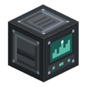

Теплица для кристаллов
alaindustrial:crystal_farm_controller
Сводка
Теплица для кристаллов делает аметист возобновляемым, не отменяя похода в геоду, а превращая одну найденную геоду в источник. До неё вся кристаллическая ветка мода упиралась в ванильный аметистовый осколок: из него делаются резонирующий осколок и пространственный кристалл, а те дальше кормят резонансную катушку, чип телепорта, лапотрон и резонансный кристалл. Осколок было неоткуда взять, кроме как выломать в геоде.
Теплица — постройка, а не станок. Игрок сам возводит герметичную комнату, ставит внутрь кристаллические рассадники, скармливает им осколки — и они начинают плодоносить настоящими ванильными аметистовыми друзами. Не похожими, а теми же самыми блоками: они так же выглядят, так же звучат, так же ломаются и так же реагируют на Удачу, потому что дроп считает ванильная loot-таблица.
Что отличает её от инкубатора. Инкубатор — про вероятность и мгновенный результат: положил, заплатил ураном и EU/FE, получил. Теплица — про ожидание и наблюдение: результат детерминирован, а платой служит время. Это два разных жанра машины, и они намеренно не пересекаются.
Сборка комнаты
Теплица состоит из пяти блоков, но обязательных среди них два — пол теплицы и
| Блок | Роль |
|---|---|
| Пол теплицы | оболочка: настил, стены, потолок — всё, что не стекло |
| Стекло теплицы | оболочка: остекление, которое при сборке сливается в один лист |
| Дверь теплицы | вход; сама закрывается за игроком |
| Контроллер теплицы | мозг: сканирует комнату, ведёт рост, докладывает об ошибках |
| Кристаллический рассадник | ставится внутри; на нём растут друзы |
Контроллер встраивается в стену панелью наружу — интерьер комнаты лежит с обратной стороны от той грани, куда он смотрит. Контроллер в полу или потолке не годится: это панель, которую читают.
Форма — любая замкнутая
Комната не обязана быть коробкой. Контроллер заливает объём воздуха внутри и принимает всё, что этот воздух удерживает: купол, ступенчатую пирамиду, пристройку буквой Г, теплицу в два этажа с проёмом между ними. Ограничения только по объёму:
| Параметр | Значение | Ключ настроек |
|---|---|---|
| Наименьший объём | 27 блоков | |
| Наибольший объём | 4096 блоков | |
| Предельное удаление от контроллера | 24 блока | |
| Интервал пересканирования | 40 тиков (2 с) |
Объём, а не длина ребра: «три блока в поперечнике» ничего не значит для купола.
Предельное удаление — второй, более жёсткий предохранитель, чем лимит объёма. Он не про баланс: негерметичная комната иначе уводила бы заливку на десятки блоков в сторону, читая чанки, которые могут быть не загружены.
Стекло годится любое — ванильное, цветное, из другого мода через #c:glass_blocks. Цветная теплица получается сама собой, отдельного кода на это нет. Дверь тоже принимается любая ванильная, не только своя.
Что игрок видит при сборке
Скан невидим, поэтому сборка показывается тремя способами разом:
- оболочка теряет швы — у пола и стекла есть вторая текстура без рамки, и собранная комната
читается одной поверхностью, а не стопкой ящиков; по контуру рамка остаётся, обводя силуэт;
- звук — один аккорд в момент замыкания, только на переходе;
- частицы — вспышка по шву пола.
Разобрали стену — оболочка мгновенно возвращается к рассыпчатому виду.
Когда комната не закрывается
Контроллер по ПКМ докладывает в чат, что не так. Если теплица уже собиралась раньше, к сообщению прибавляются координаты пропавшего блока, и из него идёт дым каждые две секунды.
Строка подписана тегом [Ala Industrial]: чат — общая полоса с сервером и всеми остальными модами, и без подписи непонятно, кто вообще говорит. Ответ читается до того, как прочитано предложение — зелёный значит «замкнута», красный «нет», — а числа и координаты вынуты из текста белым, потому что именно их игрок идёт искать.
| Состояние | Что сообщается |
|---|---|
| Собрана | объём, число рассадников, есть ли вода |
| Не замкнута | координаты пропавшего блока, если он определим; иначе просто «не замкнута» |
| Слишком мала | без координат |
| Контроллер не в стене | координаты контроллера |
| Второй контроллер | координаты чужого контроллера |
Координаты показываются не всегда, и это осознанно. Заливка не умеет сказать, где течёт: она выходит через дыру и идёт дальше, пока не упрётся в предел удаления. Поэтому дыру ищут не по заливке, а по списку ячеек оболочки, запомненному с прошлой удачной сборки — пропавший блок это тот из них, который перестал быть блоком оболочки. У теплицы, которая ни разу не собиралась, сравнивать не с чем, и тогда координаты не показываются вовсе: отправить игрока смотреть не туда хуже, чем честно сказать «не замкнута».
Рассадник
Крафтится мёртвым — тот же кристаллический камень, что и ванильный расцветающий аметист, только из него ушёл цвет. Скормите ему аметистовый осколок (ПКМ), и он нальётся цветом и начнёт плодоносить.
- Один осколок за клик. Заряд виден в надписи над хотбаром, питч звука растёт по мере заполнения.
- Аметистовый блок принимается как четыре осколка — ровно столько, сколько ваниль кладёт в его
крафт.
- Доливать можно в любой момент, не дожидаясь, пока заряд кончится.
- Потолок — 16 бутонов в очереди. Блок аметиста в почти полную грядку не принимается: он даёт
четыре бутона разом, и брать его ради одного свободного места значило бы сжечь три четверти дефицитного предмета молча. Осколками дозаправить можно всегда.
Друзы растут на свободных гранях рассадника, проходя ванильные стадии малый бутон → средний → крупный → друза. Готовая друза сбивается киркой и даёт 4 осколка (ванильная таблица, Удача работает). Недозрелый бутон не даёт ничего — как в ваниле.
Рассадник вне теплицы честно об этом говорит. Заряжать его можно где угодно, счётчик будет расти совершенно так же — а не вырастет ничего. Поэтому при кормлении блока, за которым не следит ни одна собранная теплица, вместо счётчика приходит предупреждение.
Энергия
| Поле | Значение |
|---|---|
| Роль | потребитель с буфером, необязательный |
| Буфер (EU/FE) | 4000 |
| Макс. вход (EU/FE/такт) | 32 (LV) |
| EU/FE за событие роста | 64 |
Энергия здесь — ускоритель, а не условие. Теплица без единого кабеля работает, просто медленно. EU/FE списывается только за состоявшееся событие роста: энергия покупает кристаллы, а не броски кубика.
Рост и баланс
Рост вероятностный, как у ванильного аметиста: каждые тиков каждый рассадник бросает кубик. Своя кость у каждой грядки — общий бросок заставил бы всю теплицу расти в ногу, и это читалось бы как машина, а не как живое.
Один кристалл стоит четырёх событий: бутон должен появиться и трижды подрасти.
Ускорителей три, и они перемножаются: вода, питание и опрыскиватель. Ни один не обязателен.
| Условия | Делитель | Реального времени | Игровых суток |
|---|---|---|---|
| Ничего | 270 | ≈ 1 ч 30 мин | 4,5 |
| Только EU/FE | 135 | ≈ 45 мин | 2,25 |
| Только опрыскиватель | 135 | ≈ 45 мин | 2,25 |
| Только вода | 90 | ≈ 30 мин | 1,5 |
| Вода и EU/FE | 45 | ≈ 15 мин | 0,75 |
| Вода и опрыскиватель | 45 | ≈ 15 мин | 0,75 |
| EU/FE и опрыскиватель | 67 | ≈ 22 мин | 1,1 |
| Всё сразу | 22 | ≈ 7 мин | 0,37 |
Игровые сутки — 20 реальных минут, по этому курсу и пересчитан последний столбец. Деление целочисленное, поэтому полный набор даёт 22, а не 22,5.
Это время одной грядки, а не теплицы. Грядки растут параллельно, каждая со своей костью, поэтому зал из 25 грядок отдаёт кристалл раз в ~3,6 минуты даже без единого ускорителя, а с полным набором — раз в 18 секунд. Масштаб здесь даёт больше, чем ускорители: теплице положено расти вширь.
Третий ускоритель — опрыскиватель. Поставьте его внутрь собранной комнаты с питательным раствором в баке, и контроллер найдёт его сам при очередном скане. Аура опрыскивателя тут ни при чём: рассадники не реагируют на костную муку и не тикают сами, поэтому работает именно ось контроллера. Раствор списывается за состоявшийся кристалл, не за попытку — ровно как EU/FE.
| Параметр | Значение | Ключ настроек |
|---|---|---|
| Интервал попытки роста | 100 тиков (5 с) | |
| Базовый делитель | 270 | |
| Ускорение от воды | ÷3 | |
| Ускорение от питания | ÷2 | |
| Ускорение от опрыскивателя | ÷2 | |
| Раствора за событие роста | 50 мБ | |
| Бутонов за осколок | 1 |
Экономика. Осколок вошёл — кристалл вышел — четыре осколка вернулись. Возврат четырёхкратный, оплаченный полутора часами. Полный заряд рассадника (16 бутонов) стоит 16 осколков и отдаёт 64 за примерно сутки работы загруженного чанка.
Числа держит L1-тест CrystalGrowthTest: он проверяет и что осколок возвращается дороже себя, и что возврат не улетел вверх — ферма, печатающая аметист, ломает ветку так же надёжно, как ферма, его съедающая.
Дверь
Обычная ванильная дверь по механике — петли, две половины, редстоун — с одной добавкой: она закрывается сама.
| Параметр | Значение | Ключ настроек |
|---|---|---|
| Задержка автозакрытия | 100 тиков (5 с) | |
| Повторная проверка занятого проёма | 10 тиков |
Открытая дверь теплицу НЕ разгерметизирует. Сканер смотрит на то, чем блок является, а не на то, приоткрыт ли он — ровно как у шлюза реактора, — поэтому теплица с распахнутой дверью продолжает расти. Раньше здесь было написано обратное; аудит поймал, что это никогда не было правдой.
Вариант «открытая дверь ломает герметичность» рассматривался и отвергнут: он честен, но тогда каждый проход внутрь гасил бы всю оболочку и перекрашивал её обратно через пять секунд — теплица размером с зал мигала бы дважды за визит, и это тысячи обновлений блоков в каждую сторону.
Значит дверь закрывается не ради механики, а потому что распахнутая теплица плохо выглядит и потому что комната в остальном замкнута — мобы заходят именно в незакрытую дверь.
- Дверь не держит открытой ничто, редстоун в том числе. Раньше сигнал значил «её держат
открытой намеренно», и таймер отступал; теперь теплица закрыта безусловно. Цена названа, а не спрятана: под постоянно поднятым рычагом дверь откроется один раз, закроется через 5 секунд и откроется снова только по перещёлкиванию сигнала — закрытие намеренно не сбрасывает POWERED, иначе ваниль откроет дверь на следующем же обновлении соседей и та будет хлопать, пока рычаг поднят. Шлюз на импульсе кнопки это не затрагивает.
- На стоящем в проёме дверь не закроется — проверка охватывает обе половины и считает только
живых существ: брошенный под ноги осколок дверь не держит. С тех пор как редстоун перестал держать дверь, это единственное, что стоит между таймером и дверью, захлопнутой перед носом.
Свойства блоков
| Блок | Прочность | Взрыв | Инструмент | Примечание |
|---|---|---|---|---|
| Пол теплицы | 3.0 | 6.0 | кирка | свойства formed/edge |
| Стекло теплицы | 3.0 | 6.0 | кирка | , свойства formed/edge |
| Дверь теплицы | 3.0 | 6.0 | кирка | , ломается поршнем |
| Контроллер | 3.0 | 6.0 | кирка | свойство formed, горизонтальный facing |
| Рассадник | 3.0 | 6.0 | кирка | звук аметиста, свойства charges/tended |
Рассадник всегда возвращается мёртвым: заряд — это потраченное время, и отдавать работающую грядку в карман нельзя.
Рецепты
| Что | Схема | Выход |
|---|---|---|
| Пол теплицы | TGT / GTG / TGT — T: пластина закалённого железа, G: стекло | 4 |
| Стекло теплицы | GGG / GTG / GGG | 8 |
| Дверь теплицы | GG / GG / TT — G: стекло теплицы | 2 |
| Контроллер | KAK / CMC / KKK — K: пол теплицы, A: аметистовый осколок, C: электронная схема, M: корпус машины | 1 |
| Рассадник | QSQ / SAS / QSQ — Q: кварц, S: гладкий базальт, A: аметистовый блок | 1 |
Рассадник строится вокруг блока аметиста — как ванильный расцветающий аметист и есть аметист. При этом ни один рецепт теплицы не требует того, ради чего она существует: осколки нужны на кормление, а не на постройку, иначе ферму пришлось бы оплачивать тем самым дефицитом, который она чинит.
Прогрессия
- Тир: LV, и то опционально.
- Оживляет ветку:
resonant_shard,spatial_crystal, а через них резонансная катушка, чип
телепорта, лапотрон и резонансный кристалл.
- Требует найденной геоды на старте — первые осколки берутся там. Теплица делает источник
возобновляемым, но не создаёт его из ничего.
Производительность
Единственный тикающий объект теплицы — контроллер. У рассадников и у растущих на них друз нет ни блок-энтити, ни случайного тика: ферма из сотни грядок добавляет миру один тикающий объект. Это же делает правило «растёт только в собранной комнате» верным по построению, а не по проверке, которую можно забыть.
Связанное
- Инкубатор — соседний жанр: вероятностная мгновенная мутация против
детерминированного роста во времени.
- Жердочка — прецедент многолетнего роста без блок-энтити.
- Контроллер реактора — соседний мультиблок; общая с ним только
геометрия оболочки, сканеры разные (коробка против заливки объёма).
Крафт
Крафт на верстаке
▶
Контроллер теплицы